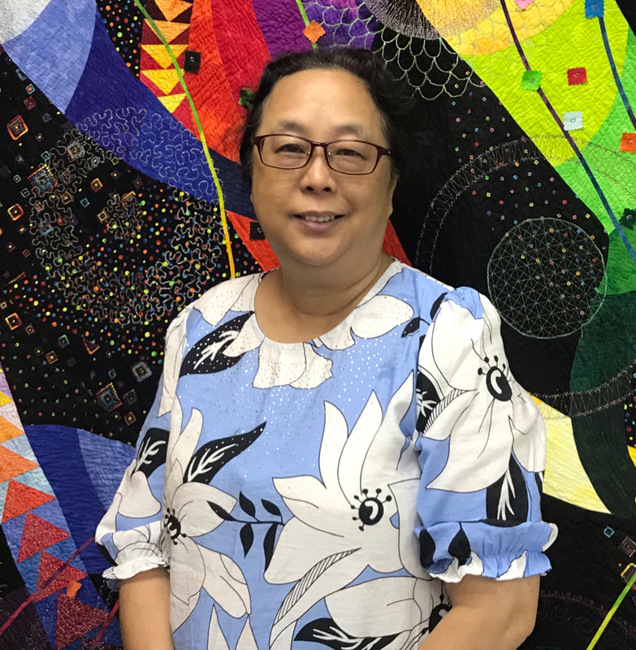
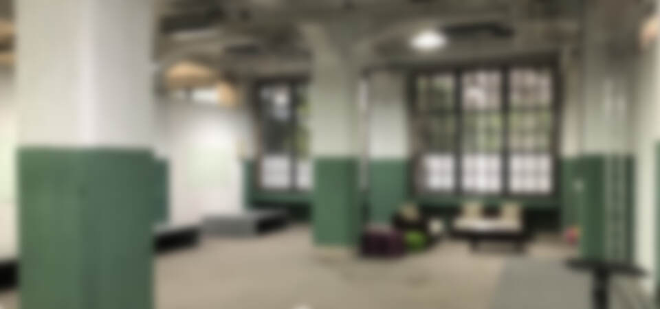
2019 友好拼布手作節
Quilt Workshop名師工作坊
Workshop Schedule
課程總表
課程內容說明、作品相片、報名，請點選表格中的藍色課程名稱即可。
以下課程上課地點：松菸文化園區 133 號共創合作社・交誼廳。
| 日期/場次 | 12/10(二) | 12/11(三) | 12/12(四) | 12/13(五) | 12/14(六) | 12/15(日) |
|---|---|---|---|---|---|---|
| 第一場 9:00-13:00 | 進場佈置 | 徐中秀 太陽花零錢包 | 小川祐佳 北歐鏤空繡 耶誕裝飾 | 小川祐佳 緞帶繡 彈片口金包 | Kristin Kulinski 自由曲線 羽毛半日塾 實做練習 | 上田葉子 一日設計塾 10:00-16:00 |
| 第二場 13:30-17:30 | 張碧恩 馬賽克提袋 | 李潔萍 【喜佳專場】 花繪側背包 | 陳翠華 漸層式 自由切割拼布 | 指吸快子 手作布花課 | Kristin Kulinski 作品壓線半日塾 設計課程 | 上田葉子 一日設計塾 10:00-16:00 |
| 第三場 18:00-21:30 | 詹建華 手機也能拍出 專業相機的美照 | 鄭蓉琪 萬人迷老師養成術 (拼布老師限定) | 陳翠華 漸層式 自由切割拼布 | 彭靜慧 【喜佳專場】下班後的摩登鉚釘三用包 | 指吸快子 粉紅夜間趴 賓果手提包 | 撤場 |
Co-creation Space B
共創空間 B
松菸創作者工廠| 上課時間 | 課程 |
|---|---|
| 2019/12/13 週五 下午13:30～下午17:30 | 【中沢玲子】疊緣貓化妝包 |
| 2019/12/14 週六 下午13:30～下午17:30 | 【創作母女檔】韓式風格手作課 |
Registration
報名流程
- 喜歡的課程，席次有限請果斷選課，並且依照報名表需求的資料填空，然後按下送出鈕。
- 兩日內匯款，將您的匯款帳號末五碼，以粉專私訊、手機簡訊的方式告訴我們您已經匯出；告知時請附上：姓名、手機、帳號末五碼。
- 開課前您會收到上課通知。
為什麼要先預留匯款帳號末五碼？
由於大會工作小組人力有限，報名表送出後後台會產出表單紀錄，預先留下付款時使用的銀行帳號末五碼，可方便工作人員核對報名資料與銀行入帳情形。若報名後超過兩日仍未付款，會再聯繫確認是否取消報名；因此，完成付款才算確認上課席位。
為什麼不是匯款後再回報匯款資料？
因為手寫、謄寫都可能發生錯誤；預先留下帳號資訊，可讓工作人員在接聽電話、閱讀訊息與每日對帳時較容易核對，減少錯誤及處理時間。
會超額報名嗎？
系統會依照上課空間設定人數，額滿時會關閉報名；若對帳後產生空位，再依候補順序遞補。
可以隨便填寫匯款帳號嗎？
為避免資料錯誤影響上課權益，請留下正確資訊，以利工作人員核對及聯繫。
Instructors
講師介紹
依上課日期排序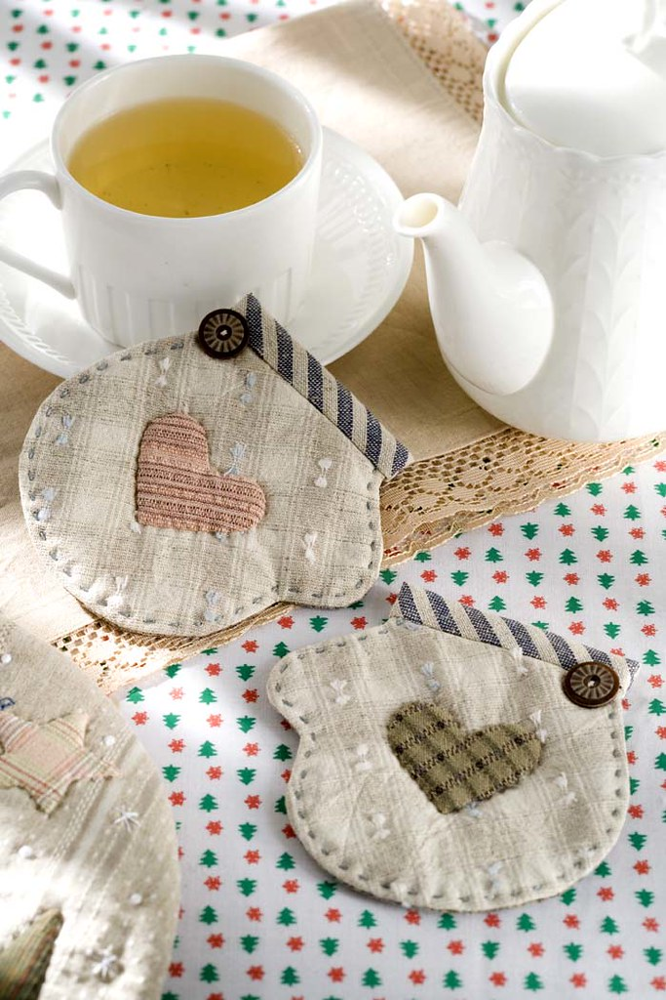
詹建華 / ROCKeY老師
拍過無數的雜誌、書籍和廣告作品。
在20歲時，第一次拿起相機後，就直接掛在脖子上，清楚的知道，這是唯一的一條路。
從廣告攝影助理開始練功力，上山下海，無樂不拍。
善長溫馨的生活風格，在柔和的光線，耐心的堅持下，從餐飲拍到手作，再從手作拍到商品與人物，
每次的主題，都能賓主盡。
優活廣告攝影／太聯文／樂手作／玩布／巧手易雜誌媽寶／
百本以上的手作書和百本以上食譜書籍
作品集https://www.flickr.com/people/27039024@N07/
在20歲時，第一次拿起相機後，就直接掛在脖子上，清楚的知道，這是唯一的一條路。
從廣告攝影助理開始練功力，上山下海，無樂不拍。
善長溫馨的生活風格，在柔和的光線，耐心的堅持下，從餐飲拍到手作，再從手作拍到商品與人物，
每次的主題，都能賓主盡。
優活廣告攝影／太聯文／樂手作／玩布／巧手易雜誌媽寶／
百本以上的手作書和百本以上食譜書籍
作品集https://www.flickr.com/people/27039024@N07/
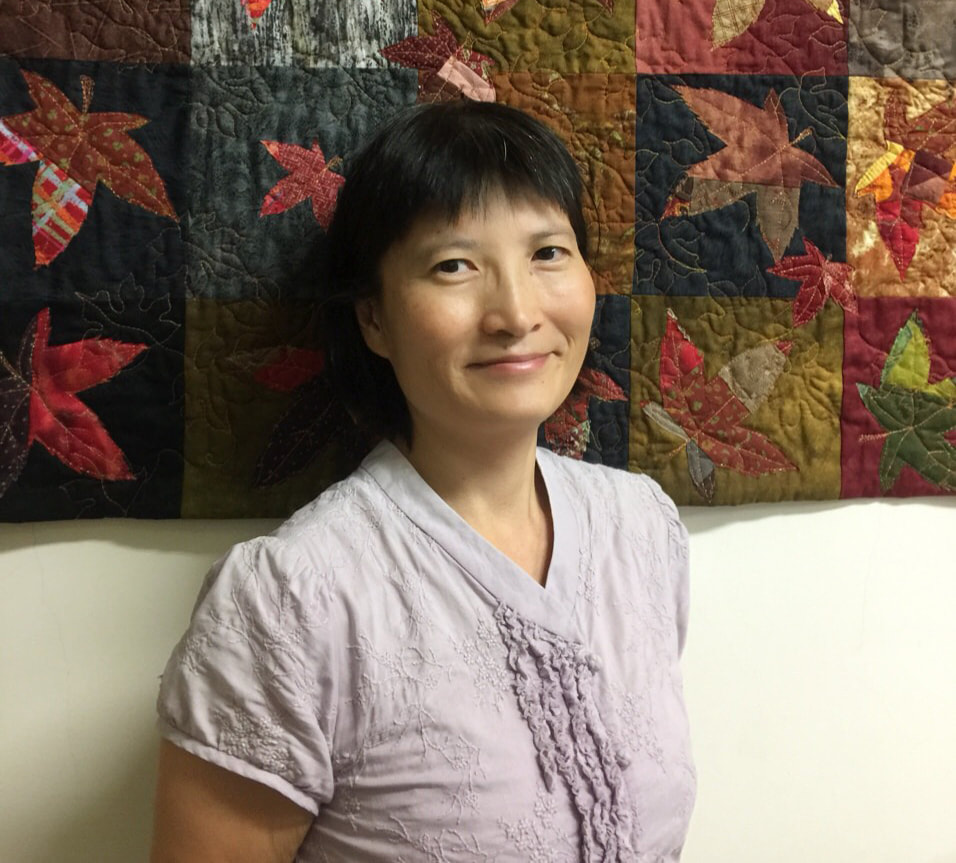
徐中秀老師
現任:
三色菫拼布坊拼布老師
布流行手工學院講師
資歷:
日本手藝普及協會拼布證書 - 手縫指導員/ 機縫指導員結業
參展記錄:
2014 台灣TAQS藝術拼布地平線展入選
2016 台灣TAQS臺灣國際拼布大展入選
2017 三色菫拼布坊師生聯展
2017 台灣TIQFA 拼布展展出
2018 台灣喜佳國際縫紉藝術生活展展出
2018 第一屆台灣拼布藝術節展出
2018 第五屆中國國際手工文化創意產業博覽會展出(鄭州)
2018 日本長野國際拼布展展出
2018AQSQuiltWeek Virginia Beach 入選
2018 第三屆北京拼布展小物類最佳創意獎
2019 台中市大墩文化中心台灣手藝設計協會拼布交流展
2019 第十一屆亞洲拼布及編織節交流展
2019 台灣友好拼布手作節
三色菫拼布坊拼布老師
布流行手工學院講師
資歷:
日本手藝普及協會拼布證書 - 手縫指導員/ 機縫指導員結業
參展記錄:
2014 台灣TAQS藝術拼布地平線展入選
2016 台灣TAQS臺灣國際拼布大展入選
2017 三色菫拼布坊師生聯展
2017 台灣TIQFA 拼布展展出
2018 台灣喜佳國際縫紉藝術生活展展出
2018 第一屆台灣拼布藝術節展出
2018 第五屆中國國際手工文化創意產業博覽會展出(鄭州)
2018 日本長野國際拼布展展出
2018AQSQuiltWeek Virginia Beach 入選
2018 第三屆北京拼布展小物類最佳創意獎
2019 台中市大墩文化中心台灣手藝設計協會拼布交流展
2019 第十一屆亞洲拼布及編織節交流展
2019 台灣友好拼布手作節
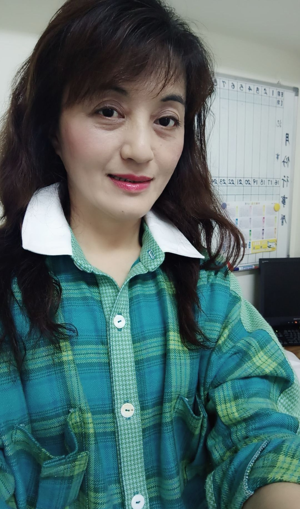
李潔萍老師
美商勝家才藝主任77年至83年
喜佳機縫第一屆講師
喜佳派駐馬來西亞教學講師
台弟公司拼布師資培訓課程講師
樹德科技大學流行設計系產學合作講師
高雄文化局決戰36小時大賽主審
高雄加工出口區環保創意大賽主審
愛上縫紉機及壓布腳縫紉全書作者之一
ECO第十四.十五.十六屆
brother ECO創作比賽優秀賞
現任
喜佳縫紉高屏才藝副理
時尚、拼布進階課程教學
時尚、拼布證書班課程教學
專長
服裝打板/拼布教學/緞帶繡證照
登麗美安服裝講師班
喜佳機縫研習講師班
永漢日本手藝普及協會本科高等科
喜佳機縫第一屆講師
喜佳派駐馬來西亞教學講師
台弟公司拼布師資培訓課程講師
樹德科技大學流行設計系產學合作講師
高雄文化局決戰36小時大賽主審
高雄加工出口區環保創意大賽主審
愛上縫紉機及壓布腳縫紉全書作者之一
ECO第十四.十五.十六屆
brother ECO創作比賽優秀賞
現任
喜佳縫紉高屏才藝副理
時尚、拼布進階課程教學
時尚、拼布證書班課程教學
專長
服裝打板/拼布教學/緞帶繡證照
登麗美安服裝講師班
喜佳機縫研習講師班
永漢日本手藝普及協會本科高等科
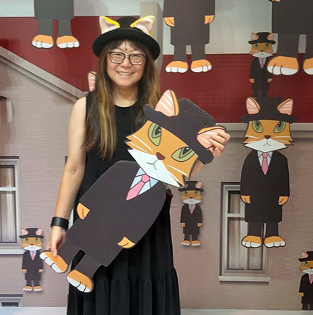
鄭蓉琪老師
12/11(三)萬人迷老師養成術
(老師限定課程)
(老師限定課程)
經歷：
多禮股份有限公司（旅遊零售業）教育訓練顧問暨人資部訓練經理、企業專案專業講師
現職：
日本手藝普及協會在台首席口譯老師（機縫、手縫、刺繡指導員課程/各種講習會等）
永漢日語教育訓練顧問暨教務主任
(企業診斷、課程設計與規劃、講師培訓、教學技巧研發等)
多禮股份有限公司（旅遊零售業）教育訓練顧問暨人資部訓練經理、企業專案專業講師
現職：
日本手藝普及協會在台首席口譯老師（機縫、手縫、刺繡指導員課程/各種講習會等）
永漢日語教育訓練顧問暨教務主任
(企業診斷、課程設計與規劃、講師培訓、教學技巧研發等)
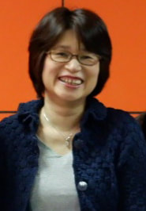
小川祐佳老師
公益財團法人日本手藝普及協會刺繍師範
ヴォーグ学園取得資格
大阪讀賣文化中心、近鐵文化沙龍等教室，擔任自由刺繍課程的講師。
北京白線講師養成講座、台灣刺繍講師養成講座擔任講師
最大的願望就是希望能跟大家分享，一針一線刺繡中的喜悅感及滿足感。
ヴォーグ学園取得資格
大阪讀賣文化中心、近鐵文化沙龍等教室，擔任自由刺繍課程的講師。
北京白線講師養成講座、台灣刺繍講師養成講座擔任講師
最大的願望就是希望能跟大家分享，一針一線刺繡中的喜悅感及滿足感。
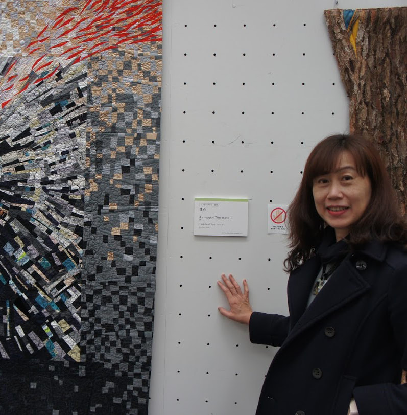
陳翠華老師
在拼布世界裡最重要的，一是明暗，一是色彩。不用紙型，簡單自由切割，自由拼接。
有了數學比例協助，輕鬆做出流暢的漸層分佈。在明暗與色彩之中，創作出專屬於自己的拼布世界。
我利用這種方式創作多年，深深感受到在抽象世界中自由表現的快樂。
不需要紙型,，只有色彩與明暗，它可以輕易開展出壯闊的風景，也可以雕塑成優雅的趣味，邀請您親手嚐試做做看！
以下是陳老師以此法曾經做過且展出的作品：
粉紅森林 2016 IQA休士頓拼布展
旅程Viaggio 2017 第十四回日本拼布展 キルト日本展
聽花布在唱歌 2018年TAQS臺灣地平線展最佳傑出獎/2019 IQA休士頓拼布展
有了數學比例協助，輕鬆做出流暢的漸層分佈。在明暗與色彩之中，創作出專屬於自己的拼布世界。
我利用這種方式創作多年，深深感受到在抽象世界中自由表現的快樂。
不需要紙型,，只有色彩與明暗，它可以輕易開展出壯闊的風景，也可以雕塑成優雅的趣味，邀請您親手嚐試做做看！
以下是陳老師以此法曾經做過且展出的作品：
粉紅森林 2016 IQA休士頓拼布展
旅程Viaggio 2017 第十四回日本拼布展 キルト日本展
聽花布在唱歌 2018年TAQS臺灣地平線展最佳傑出獎/2019 IQA休士頓拼布展
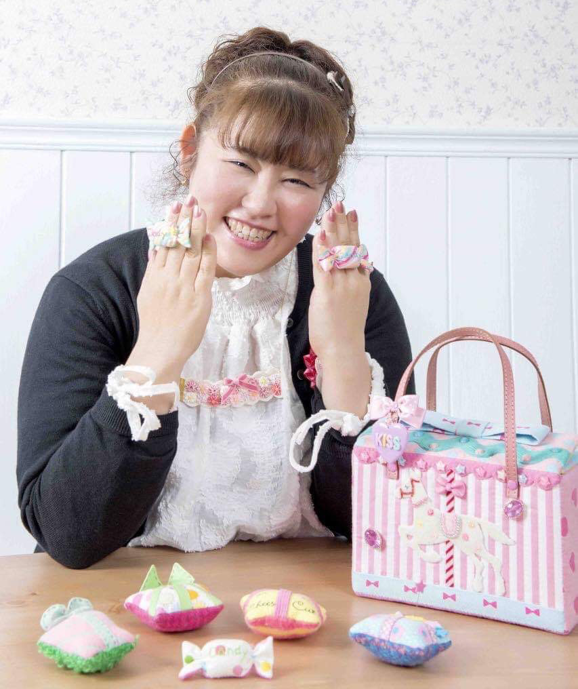
指吸快子老師
做拼布對妳是放鬆，也是遊戲嗎？
帶點成熟的少女心，是最好的保養品，妳有多久沒有玩遊戲了呢？
妳覺得不好配色的高彩度粉紅系，覺得不好意思的青春泡泡？
請跟著指吸老師一起玩遊戲，全部都化為自己的風格，一路可愛到底！
帶點成熟的少女心，是最好的保養品，妳有多久沒有玩遊戲了呢？
妳覺得不好配色的高彩度粉紅系，覺得不好意思的青春泡泡？
請跟著指吸老師一起玩遊戲，全部都化為自己的風格，一路可愛到底！
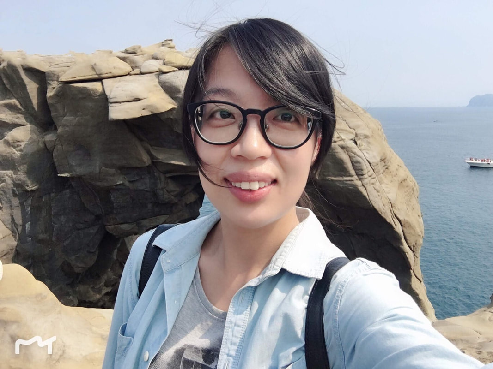
彭靜慧老師
妳最近有沒有缺包包？
來款搖滾摩登鉚釘包如何？
複合材質的組合，讓包包的設計更加有趣，但也挑戰車縫的技巧了！來做吧～
關於老師：
喜佳資深專任老師 10年
中壢生活館才藝副店長
專長：拼布/手作
證照：女裝丙級
來款搖滾摩登鉚釘包如何？
複合材質的組合，讓包包的設計更加有趣，但也挑戰車縫的技巧了！來做吧～
關於老師：
喜佳資深專任老師 10年
中壢生活館才藝副店長
專長：拼布/手作
證照：女裝丙級
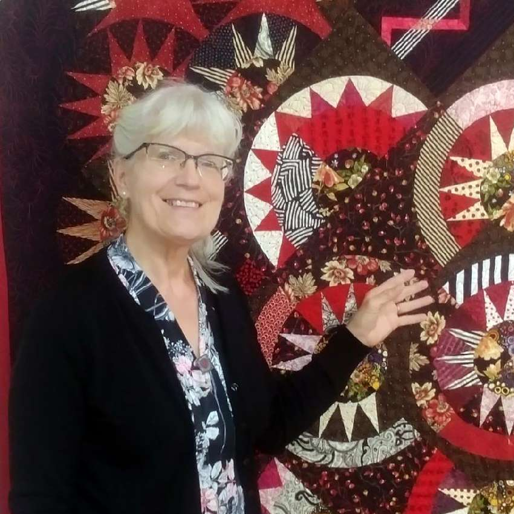
Kristin Kulinski
Kristin老師目前居住在美國威斯康辛州， 現為Quilt-agious任教拼接和壓線課程. (初階/進階都有)，有超過50年拼布經驗。
作品多次參加美國AQS及The Crazy Quilters或威斯康辛州當地拼布比賽,都有獲得名次，本次有二幅冠軍作品將來台展出。也帶來了兩堂與壓線有關的課程喔！
作品多次參加美國AQS及The Crazy Quilters或威斯康辛州當地拼布比賽,都有獲得名次，本次有二幅冠軍作品將來台展出。也帶來了兩堂與壓線有關的課程喔！
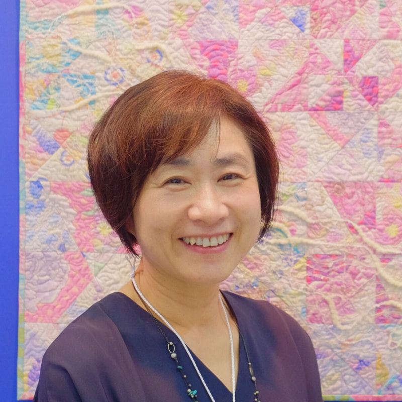
上田葉子老師
設計，是如何發想的呢？
是否經常看見美麗的圖像，聽到好聽的音樂，但不知道如何延伸在拼布作品？
如何使靈感或創意源源不絕？
如何使五感在愉快的體驗中活躍，並幫助設計？
從設計的發想開始，配色、選布、其他素材的使用，讓我帶領妳，在愉快的過程中，學會新的設計思維，將創意融入傳統拼布被的製作中，帶來不同改變。
是否經常看見美麗的圖像，聽到好聽的音樂，但不知道如何延伸在拼布作品？
如何使靈感或創意源源不絕？
如何使五感在愉快的體驗中活躍，並幫助設計？
從設計的發想開始，配色、選布、其他素材的使用，讓我帶領妳，在愉快的過程中，學會新的設計思維，將創意融入傳統拼布被的製作中，帶來不同改變。
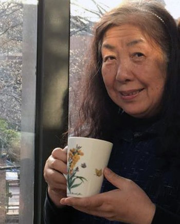
中沢玲子老師
疊緣，是什麼呢？
「疊」源自日語的“たたみ”，也就是我們說的榻榻米，是日式家居中臥榻或者地板的材質，疊緣指的是榻榻米的邊緣帶子，用以將榻榻米編織面的邊緣收邊，材質從以往的棉、絲綢，到現代的合成纖維。
織法豐富的疊緣帶，是近幾年手藝界開始使用的新型材料，胸花、包包都常見使用，妳接觸過了嗎？
本場課程內容，將在愉快的三四小時中，手縫的方式體驗疊緣帶運用作品的製作樂趣，邀請您一起來，與中沢老師一起，用手作將緣分疊疊連起。
「疊」源自日語的“たたみ”，也就是我們說的榻榻米，是日式家居中臥榻或者地板的材質，疊緣指的是榻榻米的邊緣帶子，用以將榻榻米編織面的邊緣收邊，材質從以往的棉、絲綢，到現代的合成纖維。
織法豐富的疊緣帶，是近幾年手藝界開始使用的新型材料，胸花、包包都常見使用，妳接觸過了嗎？
本場課程內容，將在愉快的三四小時中，手縫的方式體驗疊緣帶運用作品的製作樂趣，邀請您一起來，與中沢老師一起，用手作將緣分疊疊連起。
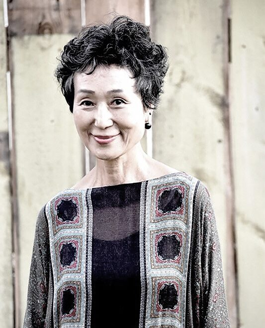
HongJoo Kim 金泓珠老師
四小時可完成兩種課程喔！
(課程一)是由金泓珠老師示範將教學的Bojagi，這是一種韓國傳統的包袱巾，五彩繽紛的紗質布料，縫製的針法也很特別，各種拼接的形狀都能以手縫方式結合，因此圖形的呈現幾乎可以不斷延伸，是很特別的韓國傳統民俗手作。
(課程二)是HIGI Jung帶來的立體創作HIGI Bird，以傳統韓服布料為基礎，配合縫紉機的操作，變化出一隻靈動可愛的布鳥，傳統花紋裝飾在鳥的身體上，既可愛又古典。
本場課程內容，將在愉快的四小時中，手縫+機縫的方式，體驗韓國作品的製作樂趣，1+1=2的韓國風格課程，是不是看了多年的韓劇，手作也來韓風一下呀？
(課程一)是由金泓珠老師示範將教學的Bojagi，這是一種韓國傳統的包袱巾，五彩繽紛的紗質布料，縫製的針法也很特別，各種拼接的形狀都能以手縫方式結合，因此圖形的呈現幾乎可以不斷延伸，是很特別的韓國傳統民俗手作。
(課程二)是HIGI Jung帶來的立體創作HIGI Bird，以傳統韓服布料為基礎，配合縫紉機的操作，變化出一隻靈動可愛的布鳥，傳統花紋裝飾在鳥的身體上，既可愛又古典。
本場課程內容，將在愉快的四小時中，手縫+機縫的方式，體驗韓國作品的製作樂趣，1+1=2的韓國風格課程，是不是看了多年的韓劇，手作也來韓風一下呀？
Event Information
活動資訊與上課須知
主辦單位台灣國際拼布友好會
協辦單位日本手藝普及協會、臺灣喜佳股份有限公司
活動地點台北松山文創園區二號倉庫
課程時間2019/12/10～15
展覽時間2019/12/13～15
聯繫電話0933-917555、0955-428566
電子信箱pinbuzhan1768@gmail.com
課程中嚴禁網路或手機直播。
取消及退款
開課前一週，請聯繫告知取消及辦理退款手續。
開課前三日即不接受退款申請及取消上課。
可接受轉讓，需來信告知轉讓及受讓人姓名、電話及地址資訊，僅限轉讓一次。
聯繫電話：0912-956855
聯繫 Email：pinbuzhan1768@gmail.com
臉書粉專私訊：m.me/Taiwanquilters